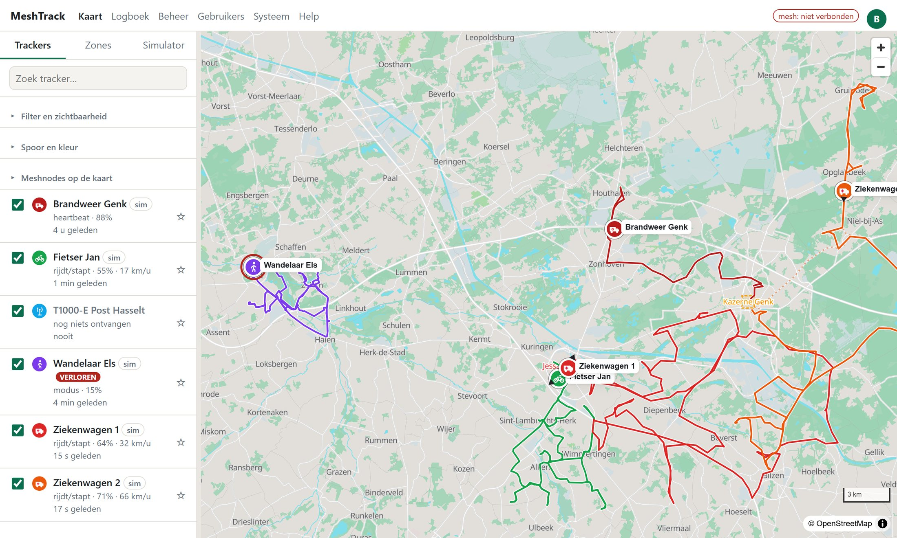
MeshTrack volgt trackers via het MeshCore-netwerk: een netwerk van radio's (LoRa) die berichten voor elkaar doorgeven. Er is geen gsm-netwerk, geen simkaart en geen internet nodig.
De tracker is een Seeed T1000-E: zo groot als een bankkaart, met GPS, een bewegingssensor, een buzzer, één knop en een led.
| Indrukken | Wat gebeurt er |
|---|---|
| 1 keer | Meteen een positie sturen. Na de modusbiep betekenen twee hoge biepjes dat de server het bericht ontvangen heeft, en één lage toon dat het niet gelukt is. Hooguit één keer per 10 s. |
| 2 keer | Van modus wisselen: één biep = tracker, twee biepjes = companion. |
| 3 keer | De buzzer aan- of uitzetten. |
| 2 tot 8 s vasthouden | SOS. Na 2 s klinken drie hoge biepjes: de SOS is gewapend. Laat los en hij stuurt meteen een SOS met zijn positie, en daarna nog twee keer met een verse positie, telkens een minuut later. Na 6,5 s klinkt een lage waarschuwingstoon: blijf je vasthouden, dan schakelt hij uit in plaats van een SOS te sturen. |
| langer dan 8 s | Uitschakelen. Weer aanzetten: de knop enkele seconden inhouden, of aan USB hangen. |
Automatisch verstuurde posities maken nooit geluid.
De groene led flitst kort om de 4 seconden zolang de firmware draait. Een langere flits (een halve tel) betekent dat er ongelezen berichten wachten voor de MeshCore-app. In trackermodus blijft de led standaard uit: dat spaart stroom.
Hang de tracker aan de magnetische laadkabel. Hij meldt meteen aan de server dat hij aan de lader hangt (en later dat hij eraf gehaald is). Aan USB is hij altijd companion; haal je hem eraf, dan gaat hij terug naar de modus die je laatst koos.
Zolang hij beweegt, stuurt hij een positie zodra aan één van deze regels voldaan is, maar nooit vaker dan nooit vaker dan 1× per toelaat.
| Regel | Wanneer | Standaard |
|---|---|---|
| Afstand | Verder verplaatst dan de minimale verplaatsing en sneller dan de minimumsnelheid (0 = ook wandelen). | 100 m, 10 km/u |
| Bocht | Richting meer gedraaid dan scherpe bocht vanaf, en sneller dan bochten pas boven. | 30°, 5 km/u |
| Ritme | In beweging hoe dan ook minstens één positie per in beweging minstens 1× per. | 10 min |
| Stilstand | Langer stil dan slapen na stilstand van: laatste positie, daarna slapen. | 5 min |
| Heartbeat | In rust een teken van leven. | 12 uur |
Een bewegingssensor maakt hem weer wakker; de eerste positie daarna heet wakker door beweging. Krijgt hij geen ontvangstbewijs, dan probeert hij het nog enkele keren (de laatste keer via flood) en wacht daarna op de volgende positie.
In beweging bewaart de tracker elke 15 s een punt (instelbaar). Elk bericht neemt zoveel bewaarde punten mee als erin passen, elk met zijn eigen tijd. Je stelt dus in hoe vaak hij verstuurt en hoe vaak hij een punt neemt: een fijn spoor met weinig berichten. De punten komen chronologisch op de kaart; gaat een bericht verloren, dan reizen ze mee met het volgende.
| Ontvangst | Wat doet de tracker | Standaard |
|---|---|---|
| Goed | De ACK komt snel binnen: in beweging stuurt hij vaker (als hij minstens 20 m verplaatst is). Pas na meer missers na elkaar dan ingesteld valt hij terug, zodat één gemiste ACK hem niet meteen trager maakt. | elke 30 s, ACK binnen 10 s, 2 missers |
| Herhalen | In het snelle ritme herhaalt hij gewone posities niet: de volgende verse positie komt er toch zo aan. SOS, een klik, stilgevallen en heartbeat krijgen altijd alle pogingen. | 0 pogingen |
| Normaal | De gewone regels hierboven. | |
| Slecht | Na enkele mislukte zendingen na elkaar stuurt hij minder vaak en spaart hij de batterij, tot de eerste ACK. | na 3 missers, intervallen × 3 |
| Code | Op de website | Betekenis |
|---|---|---|
| M | positie (beweging) | Positie terwijl hij beweegt. |
| W | wakker door beweging | Eerste positie na een rustperiode. |
| S | stilgevallen | Laatste positie voor hij gaat slapen. |
| H | heartbeat | Teken van leven in rust. |
| N | geen GPS-fix | Geen positie gevonden; wel batterij en modus. |
| P | handmatig verstuurd | Met één klik op de knop. |
| E | SOS | Noodoproep met de knop. |
| B | moduswissel | Van modus gewisseld, of aan of van de lader. |
Open de website van je organisatie (bv. meshtrack.meshmanager.net) en log in met je
gebruikersnaam en wachtwoord.
Wie een deellink kreeg, ziet de kaart zonder in te loggen, maar alleen de gedeelde trackers en zolang de link geldig is. Rechtsboven staat dan een knop Inloggen.
Klik rechtsboven op je initiaal om je wachtwoord te wijzigen of een thema te kiezen. Je voorkeuren (thema, favorieten, filters) bewaart de server, zodat ze op elk toestel gelden.
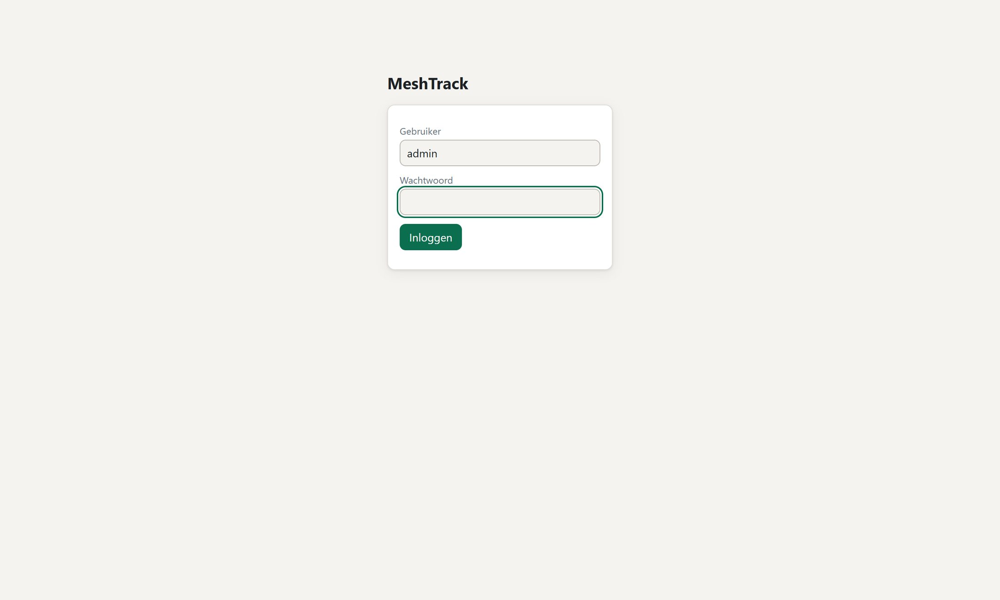
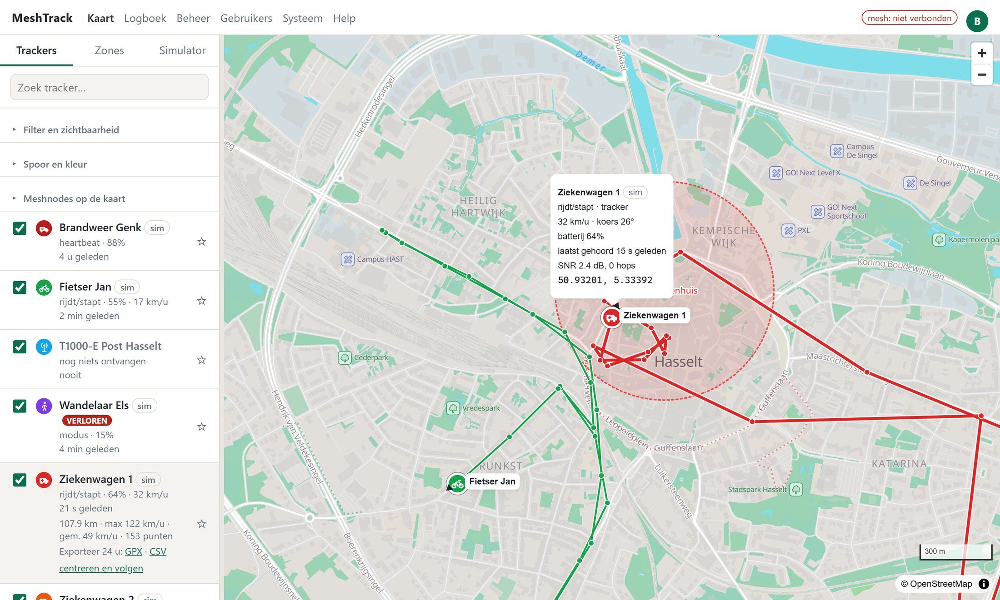
Met centreren en volgen blijft de tracker in het midden bij elke nieuwe positie. Zelf de kaart verslepen of de knop volgen stoppen bovenaan beëindigt dat.
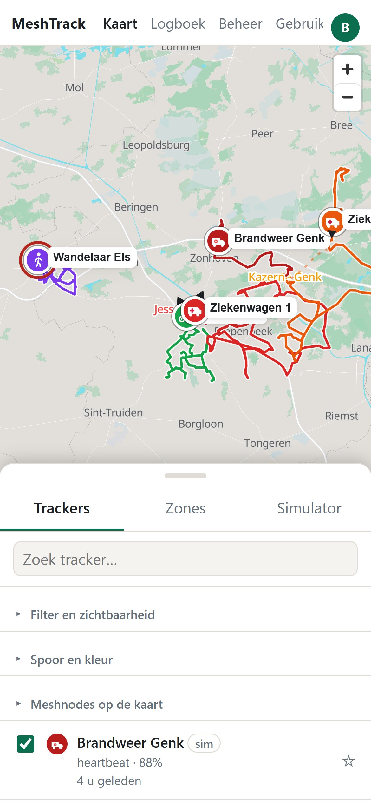
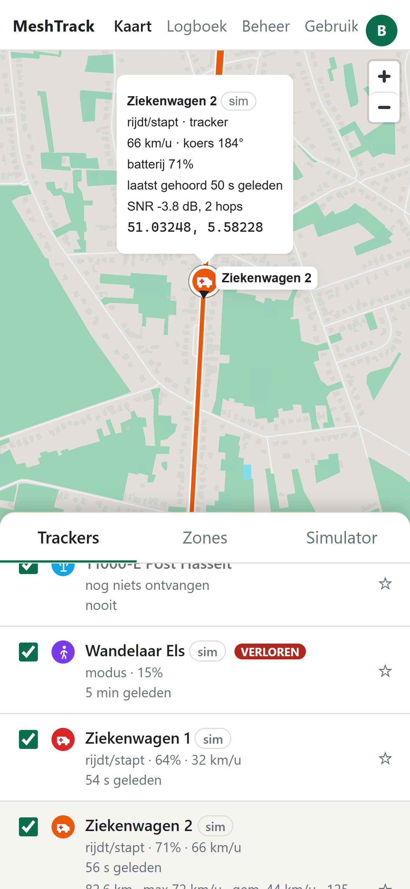
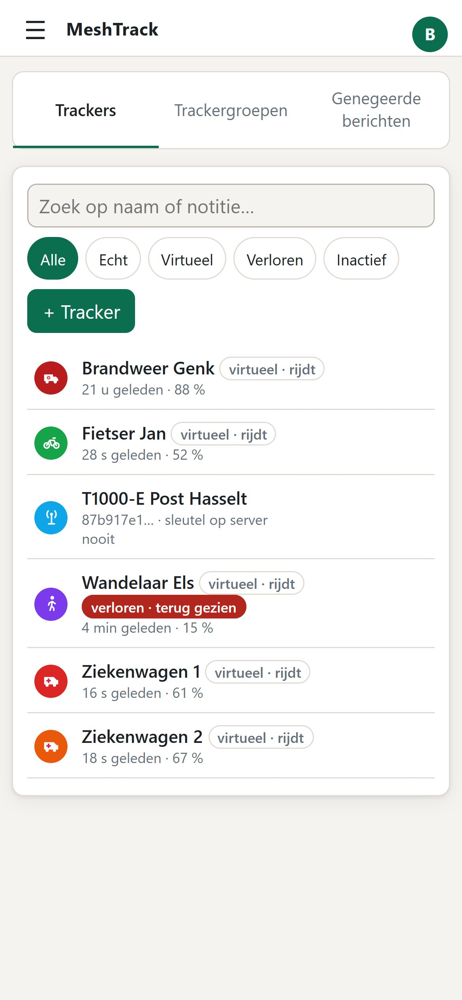
Op een telefoon staat de lijst in een onderpaneel. Sleep het streepje omhoog of omlaag om het groter of kleiner te maken, of helemaal naar beneden om het te verbergen. ☰ Lijst haalt het terug.
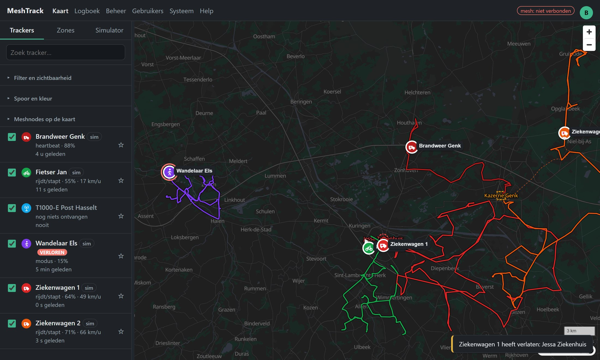
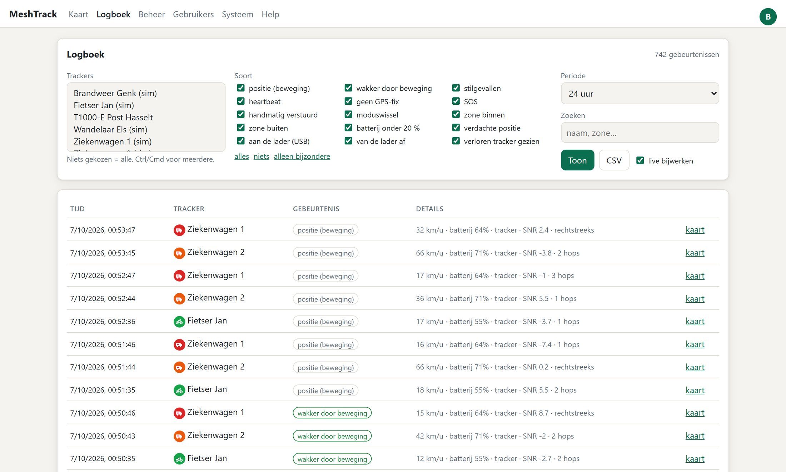
Het logboek toont alle gebeurtenissen per tracker. alleen bijzondere verbergt de gewone posities, CSV downloadt wat je ziet en kaart springt naar de plek van die gebeurtenis. Met live bijwerken komen nieuwe gebeurtenissen er vanzelf bij.
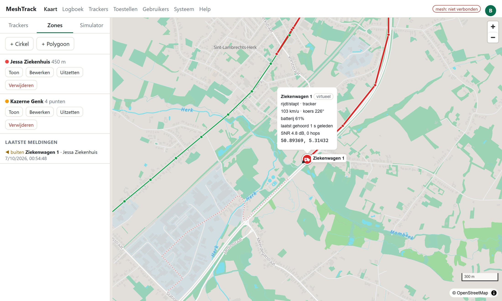
Teken in het tabblad Zones een cirkel of een polygoon op de kaart. Een zone meldt wanneer een tracker binnenkomt of vertrekt. Zonder het recht om gedeelde zones te beheren maak je een eigen zone, die alleen jij ziet.
Is een tracker zoek, open hem dan in Beheer en zet Verloren aan. Hij krijgt een rode markering VERLOREN op de kaart en in de lijsten.
Komt er daarna nog een bericht van hem binnen:
De server kan bij gebeurtenissen zelf een bericht (DM) via de mesh sturen, bv. naar de gsm van de wachtdienst (via de MeshCore-app) of naar een andere companion.
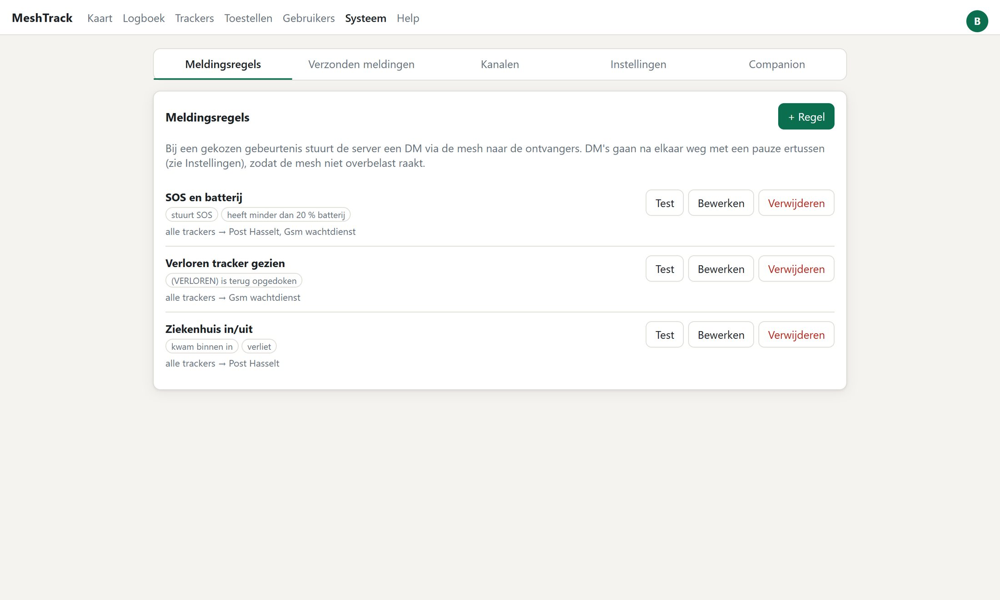
Meldingen gaan na elkaar weg, met een pauze ertussen, zodat de mesh niet overbelast raakt. Persoonlijke regels (met het recht Eigen meldingsregels) gelden voor je eigen zones.
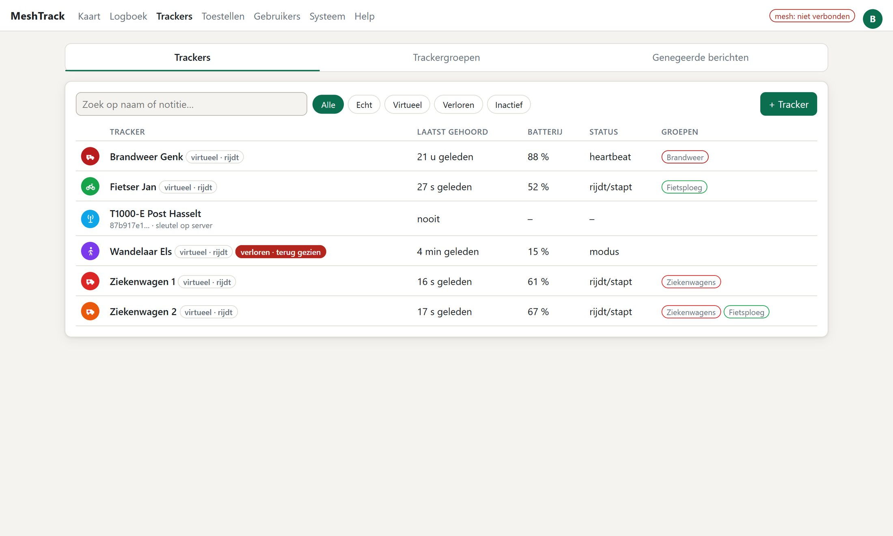
Klik op + Tracker en geef een naam, een kleur en een icoon. Voor een echte tracker zijn er twee manieren:
De server zet de tracker zelf als contact op de companion. Bij het bewerken ruim je ook opgeslagen posities op.
Ga naar Beheer → Tracker instellen via USB, steek de tracker met een USB-kabel in de computer en klik op Verbinden. Dat werkt in Chrome of Edge op een computer of Android-toestel. Het formulier toont de huidige waarden; met Opslaan op de tracker schrijf je ze weg.
Met een terminalprogramma (115200 baud) opent meteen een genummerd menu. Losse commando's (status,
set …, mode tracker, help) werken altijd.
============================================================== MeshTrack T1000-E fw 0.3.1 HOOFDMENU ============================================================== T1000-E Ploeg 3 | modus companion (USB) | batterij 99% tracker slaapt | GPS zoekt | laatste zending: OK (ACK) ============================================================== 1 Status (alles) 2 Modus en knop 3 Wanneer een positie sturen 4 Ritme 5 Stilstand en heartbeat 6 GPS en verzending 7 Nu een positie sturen 8 Onderhoud 0 Menu sluiten Keuze: _
==============================================================
MeshTrack T1000-E fw 0.3.1 MODUS EN KNOP
==============================================================
Op batterij nu gekozen: companion.
Met USB altijd companion.
1 Kies tracker (BLE uit, radio slaapt)
2 Kies companion (MeshCore-app)
3 Ook posities sturen als companion ... aan
4 Statusled ............ alleen als companion
Knop: 1x = positie nu, 2x = modus wisselen,
3x = buzzer aan/uit,
2-8 s vasthouden = SOS, langer = uit.
0 Terug
In de USB-sectie staat de nieuwste MeshTrack-firmware klaar, met de datum en de wijzigingen. Je flasht ze rechtstreeks vanuit de browser, zonder extra programma's.
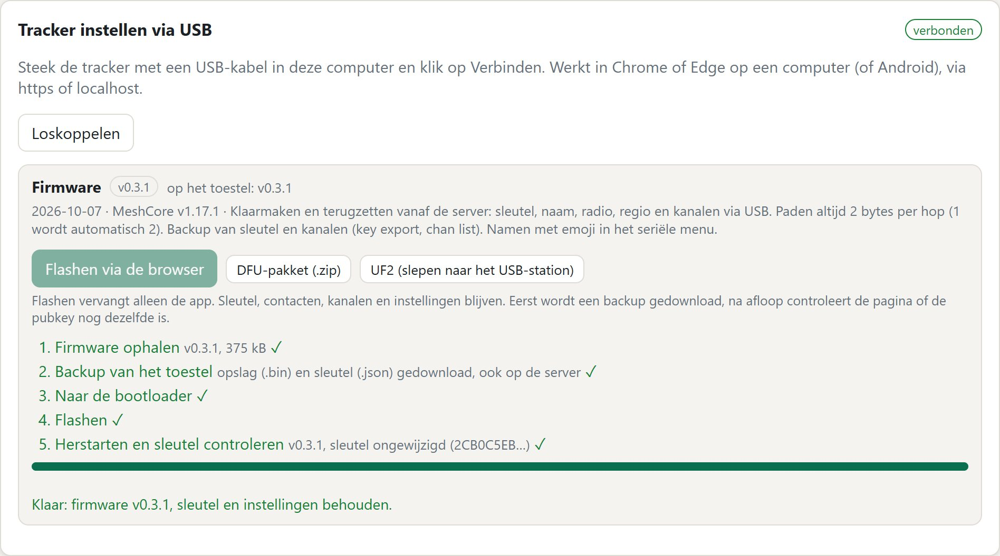
.bin) en de sleutel met de instellingen
(.json). Mag je sleutels beheren, dan gaat die ook naar de server. Lukt de backup niet, dan wordt er niets geflasht.Liever zonder browser? Download het DFU-pakket (.zip) voor adafruit-nrfutil, of het UF2-bestand:
dubbelklik op de resetknop zodat er een USB-station verschijnt en sleep het bestand erop.
Een nieuwe tracker hoef je niet met de hand in te stellen: de server maakt de sleutel en zet alles in één keer op het toestel.
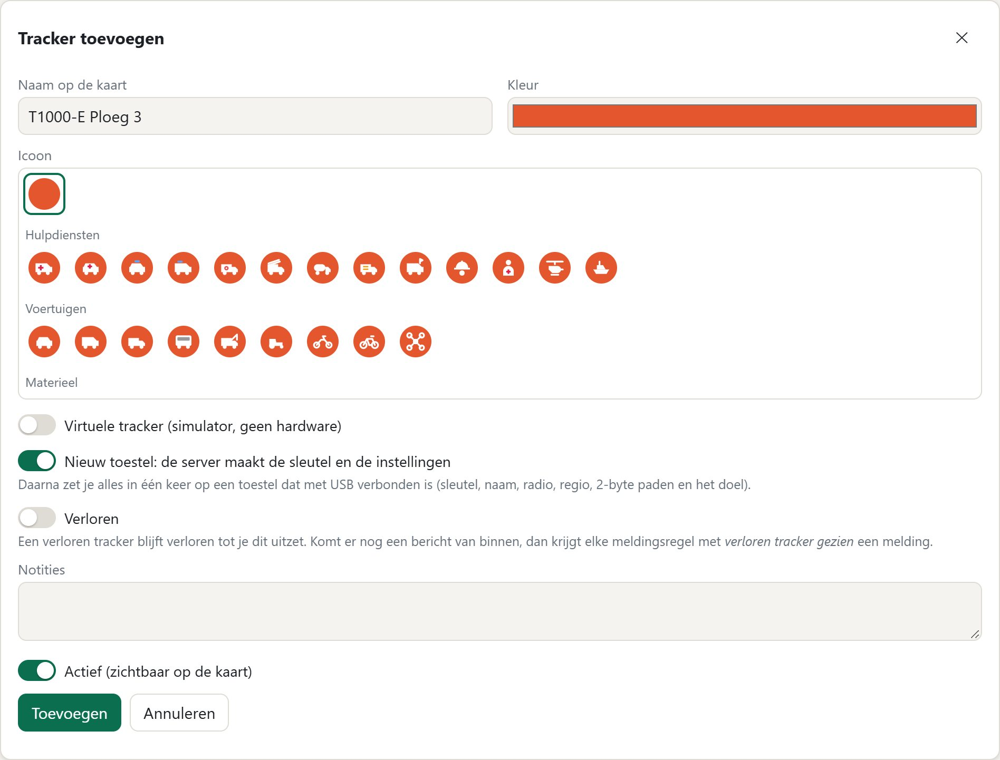
Het toestel krijgt de sleutel, zijn naam, de radio-instellingen, de regio, 2 bytes per hop, het kanaal Public en de server als doel, en start in trackermodus. Had het al een andere sleutel, dan wordt die eerst als backup gedownload.
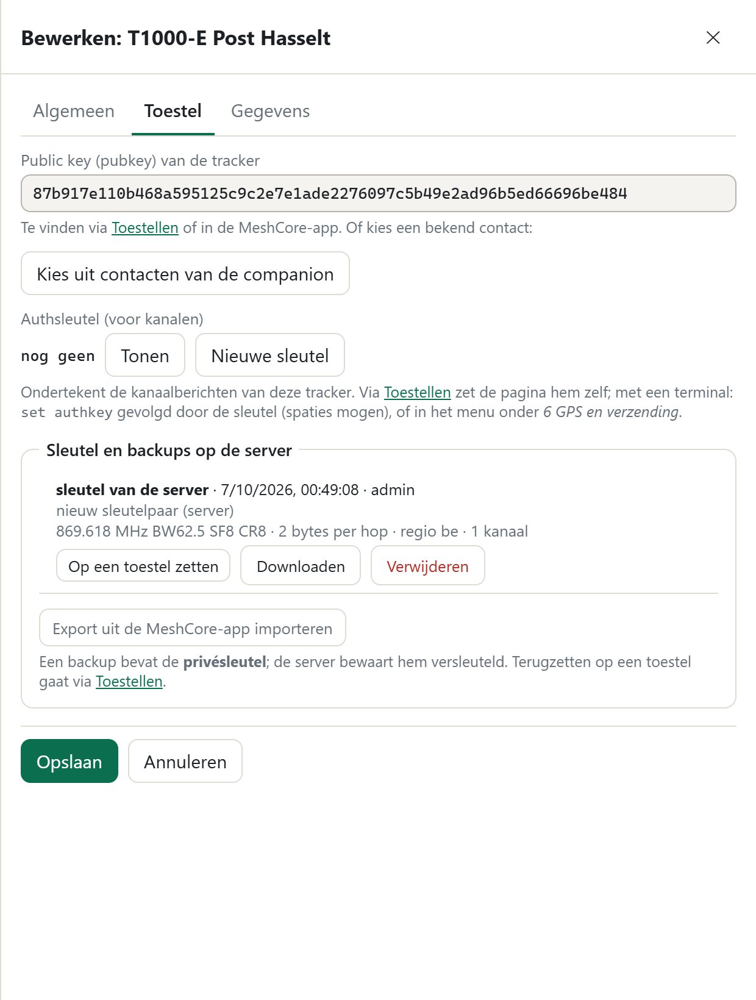
Standaard stuurt een tracker via DM naar de server, met bevestiging. Kies je in de USB-sectie bij Verzenden via een kanaal van de server, dan zet de pagina het kanaal (met sleutel en regio) en de authsleutel op de tracker. De server luistert mee op de kanalen onder Systeem → Kanalen, en elk kanaal krijgt een eigen trackergroep en kaart.
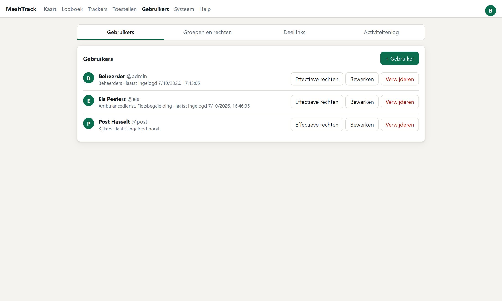
Elke gebruiker zit in één of meer groepen. Een groep bepaalt de rechten, welke trackers zichtbaar zijn en hoe ver je terug in de tijd kijkt. Zit je in meerdere groepen, dan krijg je de som: alle rechten en trackers samen, en de ruimste terugblik. Standaard zijn er vier groepen:
| Groep | Wat mag het |
|---|---|
| Beheerders | Alles, ook gebruikers, systeeminstellingen, sleutels en backups. |
| Operators | Dagelijks werk: trackers, zones, simulators, meldingen en deellinks. Geen sleutels. |
| Kijkers | Meekijken met de lijst, de sporen en het logboek (7 dagen terug), niets wijzigen. |
| Kiosk | Alleen de kaart, schermvullend, bv. op een groot scherm in de post. |
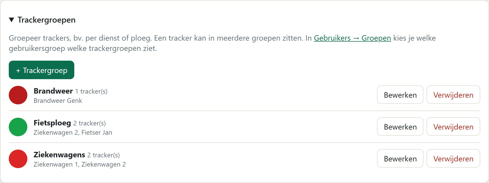
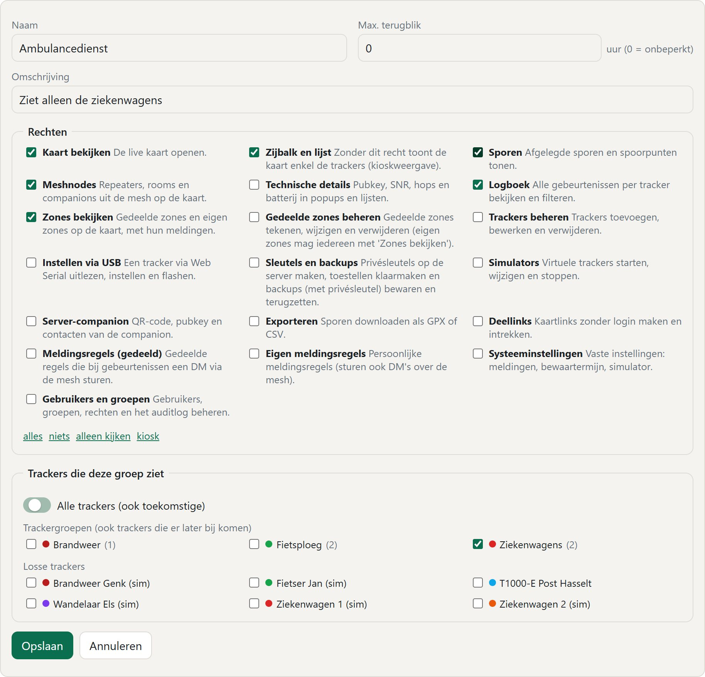
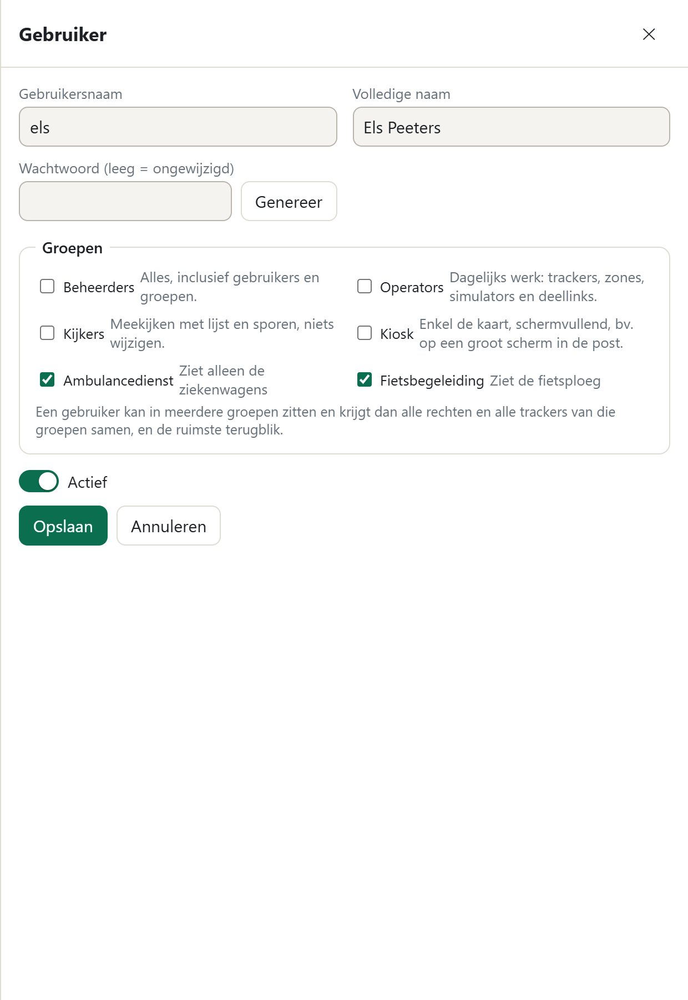
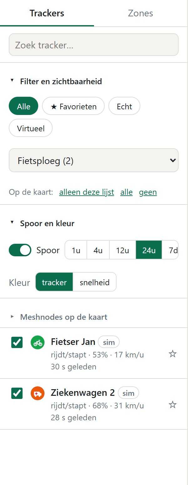
Een tracker die later aan een trackergroep wordt toegevoegd, is meteen zichtbaar voor wie die groep ziet, ook op een kaart die al open staat. Iedereen kan op de kaart de lijst filteren op één trackergroep.
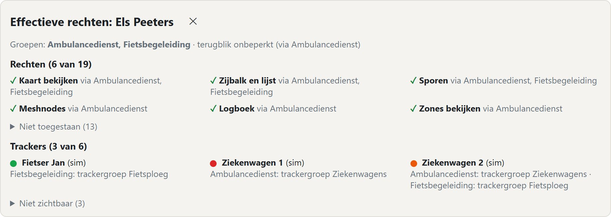
Klik bij een gebruiker op Effectieve rechten om te zien wat de gebruiker écht mag en ziet: de rechten met de groep waar ze vandaan komen, de zichtbare trackers met de reden (alle trackers, een trackergroep of een losse tracker), wat niet zichtbaar is, en de terugblik. Zo ga je na of een nieuwe gebruiker alleen ziet wat de bedoeling is.
Met deellinks toon je gekozen trackers of trackergroepen aan iemand zonder account, tot de link verloopt. Je kunt een link altijd intrekken.
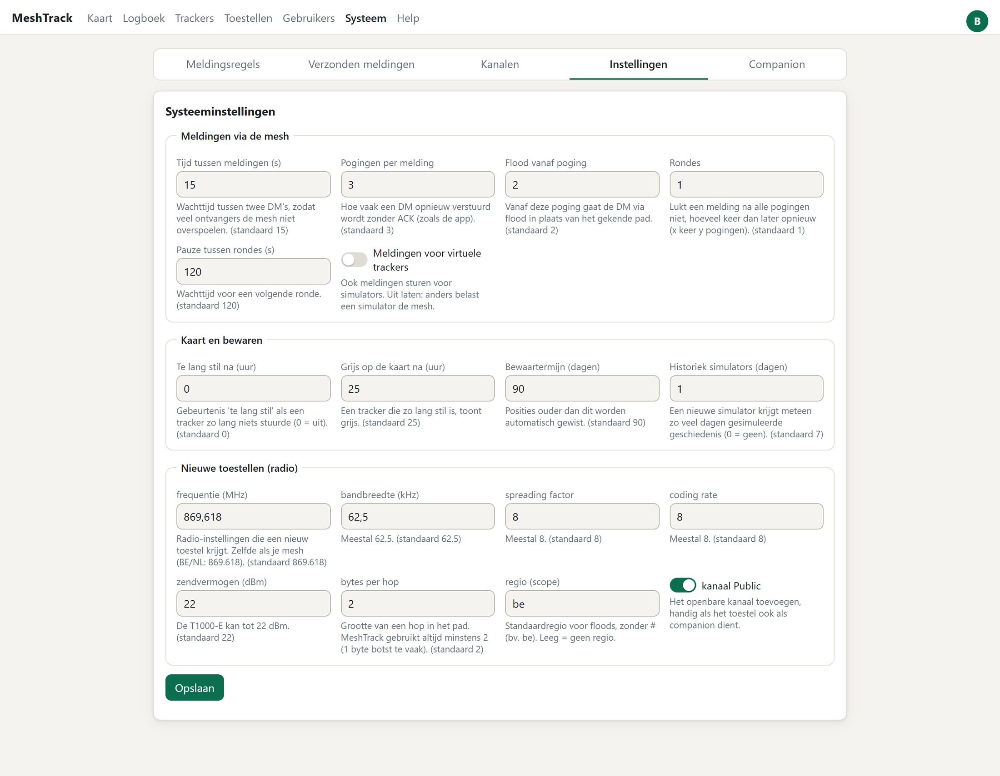
Hier stel je de pauze en het aantal pogingen voor meldingen in, de bewaartermijn van posities, wanneer een tracker grijs wordt en de standaardwaarden voor nieuwe trackers: frequentie, bandbreedte, spreading factor, coding rate, zendvermogen, bytes per hop, regio en het kanaal Public.
| Probleem | Wat te doen |
|---|---|
| mesh: niet verbonden | De companion op de server is niet bereikbaar, of een ander programma is ermee verbonden (er kan maar één verbinding tegelijk). Verwittig de beheerder. |
| Tracker verschijnt niet | Kijk in Beheer → Genegeerde berichten. Klopt de pubkey? Staat het doel van de tracker op de server-companion? |
| Lage toon na een klik | Er kwam geen ontvangstbewijs: buiten bereik, of de server is niet verbonden. Probeer later opnieuw of op een hogere plek. |
| Geen GPS-fix (N) | Binnen of onder een dak vindt hij moeilijk satellieten. Leg hem even buiten met de bovenkant naar de hemel. |
| De kaart blijft leeg | Herlaad de pagina met Ctrl+F5. |
| Verbinden via USB lukt niet | Gebruik Chrome of Edge (geen Firefox of Safari), via https of localhost. Sluit andere programma's die de poort gebruiken (terminal, MeshCore-app op de pc). |
| Flashen blijft hangen | Trek de USB-kabel uit en steek hem terug in; de oude firmware start weer. Probeer opnieuw en kies de bootloader-poort als de browser erom vraagt. |
| "Firmware kan geen sleutel ontvangen" | Flash eerst de nieuwste firmware; klaarmaken kan pas vanaf 0.3.1. |
| Andere pubkey na flashen | Klik op Sleutel en instellingen terugzetten, of zet de backup terug via Op verbonden toestel zetten. |